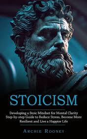

Meditations is the account of Marcus Aurelius's thoughts and advice written by himself. It is a book with a collection of Aurelius's private thoughts and him giving advice on how to be responsible and meet the obligations of life. Every night Aurelius took time to write reminders on having a stable character, with qualities such as humbleness, indifference, patience, etc.
What is a stoic mindset?

Thousands of years ago, a group of men in Greece and Rome called tthe stoics practiced what some may call a radical way of life. The stoics believed that peace of mind is the goal of all people. The stoics believed happiness didnt lie in the external world, but within your own mind. The stoics believed your thoughts create the world you inhabit, and no external circumstance could affect you if you let them. An example is how Marcus Aurelius himself, once lost nearly all of his wealth due to a storm that caused a trading vessel to capsize. Unlike most people, who would have been devastated, Marcus Aurelius didnt let it bother his peace of mind one bit, and swiftly and contently moved on .